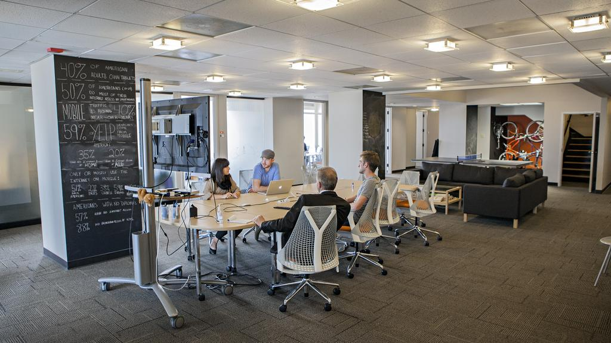

My experience when visiting Archer Malmo was very interesting. The feeling of the building was not what I expected. There were tons of bright colors on the walls and the employees had their own offices. I was expecting cubicles scattered everywhere and a lot of background noise like phones ringing constantly. The building was tranquil and colorful. I liked the idea of having dogs allowed in the building, it was fun to see some dogs walking by smiling and enjoying their time. I think that having the privilege to do that is really cool. There could also be some benefits for having dogs allowed for work, like stress relief for instance.
The office rooms are lined up along the sides and edges of the building, while allowing some space in the middle for a lounge area. The idea for having a lounge area promotes cooperation and is also another way to relieve stress on the job. Hearing about their jobs and roles really helped me figure out what Archer Malmo does as a company. The backstories of the people we asked was fun to hear, I laughed when I heard about the Steamboat story. The studio was neat to see, and I finally know how they make that strange unlimited blank space effect like they do in those Apple commercials.
The stairways were a bit odd to have the steps steep and the railing steep too, but it was unique in a sort of art type way. The sculptures in the main lobby and throughout the stairways and floors was really neat to see, it kept me entertained and I liked the Ladder Christmas tree. Overall my experience at Archer Malmo was something new that I would’ve never guessed to expect. The fundamentals of their company with how they run it and how they allow their employees to have some lounge time and freedom and they can pick their time off, to me is a good idea that most companies should implement.